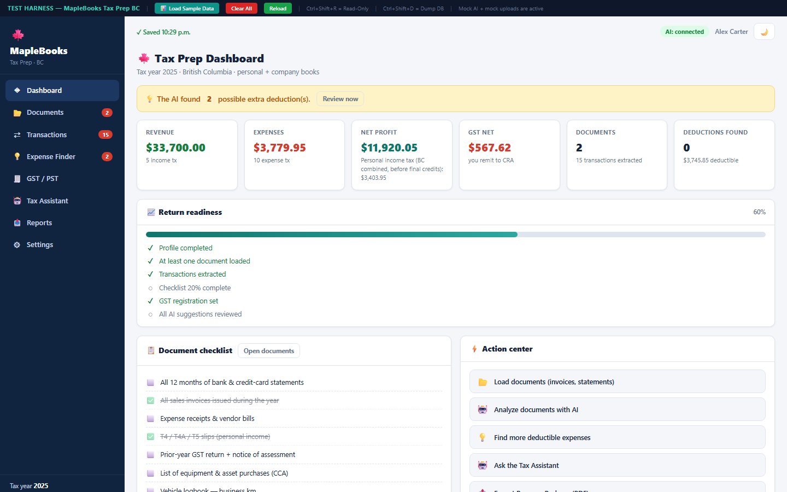
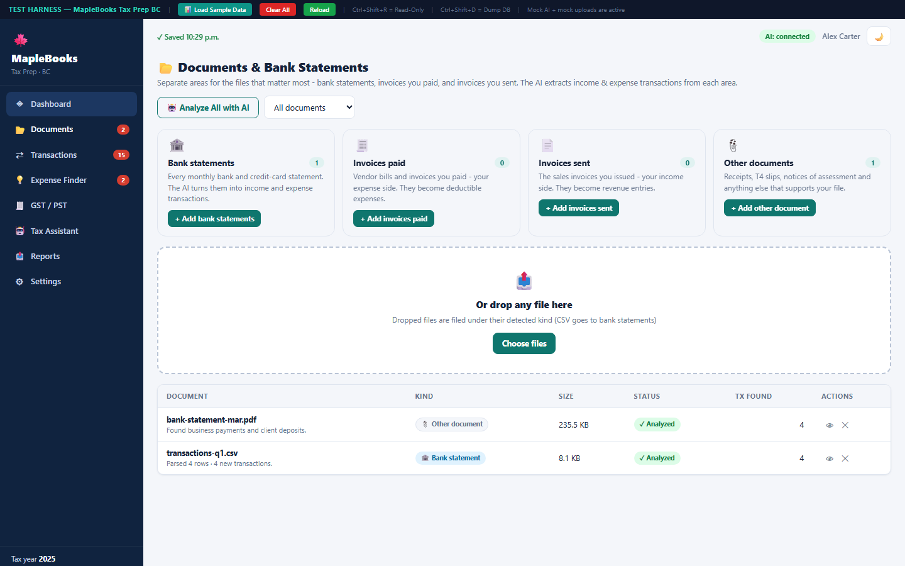
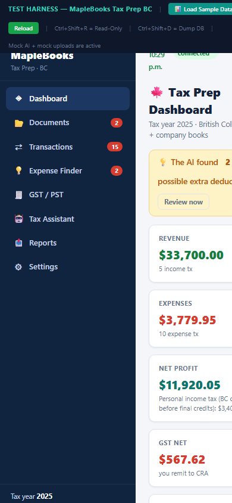

Bank statements, invoices paid, invoices sent - each has its own area. The AI turns them into a clean income and expense ledger, hunts missed deductions, and prepares your GST/PST summary.
From raw documents to a preparer package - one tool does the bookkeeping and the tax math.
Bank statements, invoices paid, invoices sent and other documents each have their own upload area - no more mixed piles.
Each file is extracted and classified with the right income/expense direction for its kind - automatically.
A short AI interview finds the deductions you forgot - home office, vehicle, phone and more.
GST 5% + BC PST 7% calculated from your ledger, mapped to the GST34 lines - ready to file.
Ask anything about your books, deductions and CRA filing - it sees everything you loaded.
One PDF with the profile, ledger, income statement, GST summary and open questions - send it to your accountant.

Every document type has its own area with guidance, so income and expenses never mix.

The expense finder asks a few questions, then suggests home-office, vehicle and phone deductions with the evidence you need.

The whole dashboard fits a phone - check the ledger and the AI findings between client visits.
Three steps, one clean tax file.
Drop bank statements and invoices into their areas - the AI extracts and classifies every transaction.
Approve AI classifications, answer the expense-finder questions and chat with the tax assistant.
One PDF with your ledger, income statement, GST summary and open questions - ready for your accountant.
Why owners switch from spreadsheet bookkeeping.
| The usual way | Personal Tax Preparation | |
|---|---|---|
| Document handling | ✕ One pile of files, manual entry | ✓ Separate areas per document kind |
| Missing deductions | ✕ You find them at year end - or not | ✓ AI expense finder interviews you |
| GST / PST | ✕ Recalculated by hand every period | ✓ Ledger to GST34 lines automatically |
"Uploaded a year of bank statements and invoices in an afternoon - the ledger built itself."
Owner, BC consulting practice"The expense finder caught vehicle and home-office deductions I had never claimed."
Freelance designer, Vancouver"My accountant got the package and sent back one question instead of forty."
Independent contractor, VictoriaCanadian sole proprietors and independent contractors - especially BC owners who must file GST (5%) and PST (7%).
No - it prepares your books, GST/PST summary and an accountant-ready package. Final filing numbers should be confirmed by an accountant.
Both live in one place: personal income and expenses, company books, and the deductions that connect them.
Browse real screenshots of Personal Tax Preparation with sample data - click any image to open it full size.
Screenshots show the tool with mock data - the real tool connects to your own account. Get Personal Tax Preparation
Let the AI build your ledger, find your deductions and prepare your GST/PST - today.
Get started